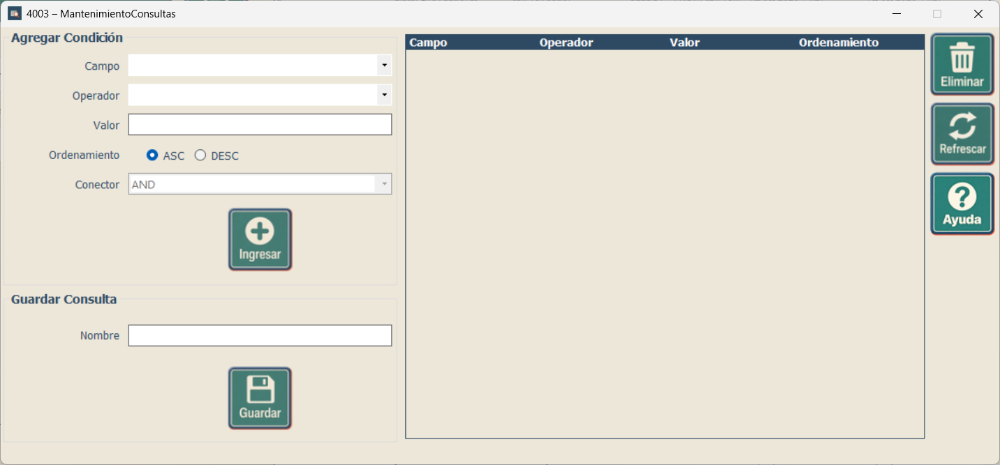

Capacitación - Consultas
Creación y guardado de consultas reutilizables
Creación y guardado de consultas reutilizables
Esta pantalla permite construir una consulta agregando una o varias condiciones, definir el orden de los resultados y guardar la configuración con un nombre para reutilizarla posteriormente.

| Botón o control | Función | Cómo usarlo |
|---|---|---|
| Campo | Selecciona la columna que será evaluada por la condición. | Elija un campo disponible de la tabla sobre la que está trabajando. |
| Operador | Define la comparación que se realizará sobre el campo. | Seleccione el operador disponible que corresponda a la condición que desea crear. |
| Valor | Indica el dato con el cual se comparará el campo. | Escriba el valor requerido para la condición. |
| ASC | Ordena los resultados de menor a mayor o de A a Z. | Seleccione esta opción cuando desee un orden ascendente. |
| DESC | Ordena los resultados de mayor a menor o de Z a A. | Seleccione esta opción cuando desee un orden descendente. |
| AND | Une condiciones y exige que ambas se cumplan. | Úselo cuando los registros deban cumplir todas las condiciones relacionadas. |
| OR | Une condiciones y permite que se cumpla una u otra. | Úselo cuando sea suficiente que un registro cumpla cualquiera de las condiciones. |
| Ingresar | Agrega la condición configurada a la lista de condiciones de la consulta. | Complete Campo, Operador y Valor; configure ordenamiento y conector; luego presione el botón. |
| Eliminar | Quita de la consulta la condición seleccionada en la tabla. | Seleccione primero una fila de la tabla de condiciones y luego presione Eliminar. |
| Refrescar | Recarga o reinicia la información de la pantalla. | Úselo cuando quiera actualizar el contenido o comenzar nuevamente la configuración. |
| Ayuda | Muestra este manual de uso. | Presiónelo cuando necesite consultar las instrucciones. |
| Nombre | Identifica la consulta que será guardada. | Escriba un nombre breve y descriptivo para reconocerla posteriormente. |
| Guardar | Almacena la consulta configurada para poder utilizarla nuevamente. | Agregue primero las condiciones necesarias, escriba un nombre y luego presione el botón. |